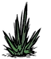
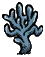

Ponds are small bodies of water that usually spawn in Grasslands, Forests, Marshes, and Ruins. There are three types of ponds: purple, green and blue. Purple ponds appear in Marshes and spawn Mosquitoes at dusk and night. Green ponds appear in Grasslands and Forests and spawn Frogs during the day. Blue ponds are found in Ruins and provide eels when fished.
The main attraction to Ponds is the option to fish in them. Using a Fishing Rod, Fish or Eels can be caught at any time of day. In Winter, Ponds freeze and do not spawn creatures. They also cannot be fished, though they can be walked over.
Ponds spawn with 2-4 plants along their banks, which can be examined separately from each pond. They cannot be picked, but they can be set on fire to yield Ash. The plants will grow back every summer. Ponds found in the Ruins have plants that resemble lichen instead of the normal plants.
Plant
Note: This is about a specific in-game object, for a list of plants in-game, see Plants.
Plant

DebugSpawn
"marsh_plant"
Algae

DebugSpawn
"pond_algae"
“
IT IS AN UNINTERESTING PLANT.
”
–WX-78
Plants are in-game flora that only spawn near Ponds. They cannot be harvested and there doesn't appear to be any use for them. The only interaction you can perform with plants is to Burn or Examine them.
Tips
When fishing, one should be wary of Frogs and Mosquitoes, as they are aggressive.
When fishing in a Marsh, it should be noted that the Marsh is also the native habitat of Tentacles and Merms.
One may fish in Frog Ponds unbothered at dusk when the Frogs return to the water, and in the spring and fall when it is warm enough to thaw the Pond but not warm enough for Frogs to spawn. One may fish in Mosquito Ponds unbothered during the day, since Mosquitoes only come out at dusk/night.
")
{kind=link}
{kind=link}
{kind=link}
{kind=link}
{kind=link}
{kind=link}
{kind=link}
{kind=link}